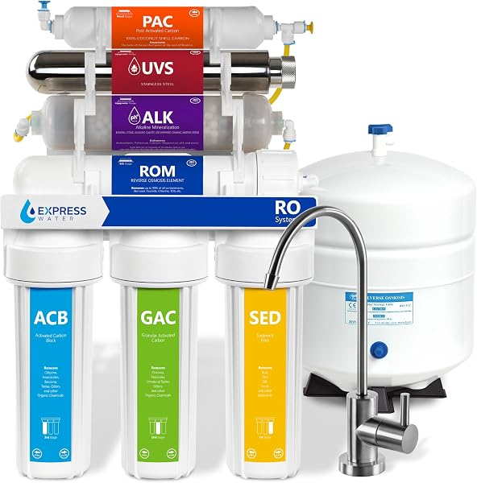
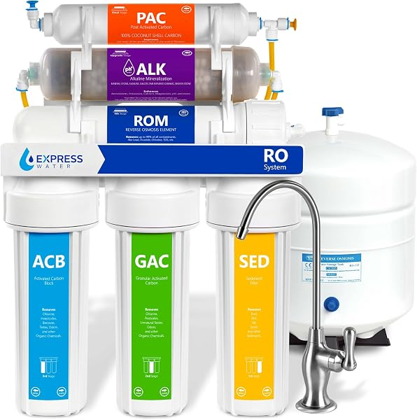

Express Water Reverse Osmosis Review 2026: RO5DX, ROALK5D, ROALKUV10M Compared
PureFlow Lab is reader-supported. We may earn a commission when you buy through links in this guide — at no extra cost to you. As an Amazon Associate, we earn from qualifying purchases. See our Disclosure for details.
Top Picks (At a Glance)
The Express Water lineup we cover in this review, ranked by use case:

Express Water RO5DX — 5-Stage, 50 GPD, NSF 372 & 58
The best-selling Express Water system and one of the best value buys in the entire RO category. 5-stage tank-based filtration, NSF/ANSI 372 and 58 certified, 50 GPD, deluxe chrome faucet. 6,000+ reviews at 4.6 stars. The right pick for most homeowners who want proven RO water at the lowest sensible price. ~$153.
Check Price on Amazon →Express Water ROALK5D — 10-Stage Alkaline, 50 GPD
The RO5DX with alkaline remineralization added. 10-stage filtration that adds minerals back after the RO membrane so the water tastes less “flat,” NSF/ANSI 372 certified, 50 GPD. 2,500+ reviews at 4.6 stars. The pick if RO water tastes too stripped to you. ~$210.
Check Price on Amazon →
Express Water ROALKUV10M — 11-Stage Alkaline + UV, 100 GPD
Adds a UV sterilization stage on top of alkaline remineralization — the UV light kills bacteria and viruses that RO membranes can miss, which matters for well water or any unchlorinated source. 11-stage, 100 GPD (double the RO5DX), NSF/ANSI 372 certified. 1,900+ reviews at 4.5 stars. ~$270.
Check Price on Amazon →
Express Water ROALK10D — 10-Stage Alkaline, 100 GPD
Quietly one of the best-value picks in the lineup: alkaline remineralization plus a 100 GPD membrane (double the RO5DX’s flow) at a price often below the 50 GPD ROALK5D. NSF/ANSI 372 certified. The pick for larger households that want alkaline water and faster tank refills. ~$166.
Check Price on Amazon →
Express Water EZRO5 — Countertop RO, Faucet Attachment
For renters and anyone who can’t drill into cabinets. Attaches to your existing faucet — no under-sink plumbing required. 4.0-star rating (lower than the under-sink line) but the cheapest entry into Express Water RO for a no-install situation. ~$165.
Check Price on Amazon →TL;DR: Express Water is the value king of residential reverse osmosis. Where Waterdrop leads on tankless engineering and smart features at premium prices, Express Water sells proven tank-based systems for roughly a third of the cost. For most homeowners, the RO5DX at ~$153 is the right pick — 5-stage filtration, NSF/ANSI 372 and 58 certified, 6,000+ reviews at 4.6 stars. If RO water tastes too flat for you, step up to the ROALK5D for alkaline remineralization, or grab the often-cheaper higher-flow ROALK10D (100 GPD). Well-water owners should look at the ROALKUV10M (~$270) for its UV sterilization stage. Renters who can’t install under-sink should consider the EZRO5 countertop. Express Water does not make a whole-house RO system — for that, see our best whole house RO guide.
If you’ve shopped reverse osmosis on Amazon, you’ve seen Express Water — they own several of the top spots in the category, usually at prices that undercut every name-brand competitor. The question buyers actually have is: are they good, or are they cheap? The answer is “both, and that’s the point.” This review covers the full Express Water RO lineup with honest assessments of where each model wins and where the budget shows.
About Express Water
Express Water is a US-based (Brooklyn, NY) water filtration company that built its reputation on a simple proposition: standard, proven, tank-based RO technology sold at aggressive value prices through Amazon. They’re the opposite of a premium-tech brand. There’s no app, no tankless wizardry, no smart leak detection. What there is: solid filtration, easy DIY installation, and a price that’s hard to argue with.
The brand’s core differentiators:
- Value pricing. The RO5DX undercuts the APEC ROES-50 and iSpring RCC7AK — the two other budget-RO standard-bearers — and absolutely undercuts tankless brands like Waterdrop. For pure dollars-per-gallon-of-treated-water, Express Water is among the cheapest credible options.
- Modular, expandable design. Express Water’s signature trait. The systems use standard 10-inch housings, and you can add stages — alkaline, UV, or deionization (DI) — as your needs change. The model naming reflects this: a base RO5DX can effectively become a ROALK system with an alkaline stage, or a ROALKUV with a UV stage added.
- Color-coded, DIY-friendly installation. Tubing and fittings are color-coded so a first-timer can follow the connections. Express Water leans hard into the “you can install this yourself in an afternoon” promise, and the review volume suggests most buyers manage it.
- Huge review base. The RO5DX alone has 6,000+ reviews. That volume of real-world feedback is itself a feature — you’re not gambling on an unproven product.
What Express Water doesn’t do: tankless systems (everything is tank-based with a 3-4 gallon storage tank), smart features, or whole-house RO. For tankless and smart, look at Waterdrop. For whole-house RO, look at iSpring, US Water Systems, or Crystal Quest (see our best whole house RO guide).
The Express Water Lineup Explained (Decoding the Names)
Express Water’s naming scheme is actually more logical than most once you crack the code. The letters describe the stages, and the numbers describe the flow:
- RO = the base reverse osmosis system.
- ALK = an alkaline remineralization stage is included (adds minerals back after the RO membrane).
- UV = an ultraviolet sterilization stage is included (kills bacteria and viruses).
- DI = a deionization stage (for ultra-pure water — aquariums, labs, spot-free car washing).
- The number (5D, 10D, 10M) roughly tracks stage count and the D vs M typically denotes faucet/configuration variants.
- GPD (50 or 100) = the membrane’s gallons-per-day rating. Higher GPD refills the tank faster.
So the RO5DX is a 5-stage base RO. The ROALK5D is that plus alkaline (10-stage). The ROALKUV10M is RO plus alkaline plus UV (11-stage) on a 100 GPD membrane. Once you see the pattern, you can read any Express Water model name and know exactly what’s inside.
If you’re shopping in 2026, the systems worth your attention are the RO5DX, ROALK5D, ROALK10D, ROALKUV10M, and the EZRO5 countertop. The rest of the catalog is mostly replacement filters and add-on stages.
Top Picks Detailed
Best Overall: Express Water RO5DX (5-Stage, 50 GPD)
The Express Water RO5DX is the right Express Water pick for most homeowners and one of the strongest value buys in the entire RO category. Five stages (sediment, two carbon stages, RO membrane, post-carbon polish), NSF/ANSI 372 and 58 certifications, 50 GPD output, and a deluxe chrome faucet included.
The certifications matter here. NSF/ANSI 58 certifies actual reverse osmosis performance (TDS reduction), and 372 certifies lead-free materials. Many budget RO systems carry only one of these or neither. The RO5DX carries both, which is the baseline you want for drinking water you trust.
At ~$153, the RO5DX is dramatically cheaper than the tankless competition (the Waterdrop G3P600 is $439) and still undercuts the other budget tank-based names. The trade-off is that it’s tank-based: you get a 3-4 gallon storage tank under the sink (so it takes more cabinet space than a tankless unit), and the 50 GPD membrane refills the tank more slowly than a high-flow system. For a normal household’s drinking and cooking water, neither is a real limitation.
Pros: Best-in-class value, NSF 372 and 58 certified, 6,000+ reviews at 4.6 stars, genuinely DIY-friendly install, cheap and widely available replacement filters. Cons: Tank-based (takes cabinet space), 50 GPD is slower-refilling than high-flow systems, no alkaline remineralization (water tastes flat to some), basic faucet.
Price at last check: $152.68. Check Price on Amazon →
Best Alkaline: Express Water ROALK5D (10-Stage Alkaline)
The Express Water ROALK5D is the RO5DX with the single most-requested upgrade added: alkaline remineralization. The most common complaint about RO water is that it tastes “flat” or “empty” — because the RO membrane strips out the dissolved minerals (calcium, magnesium) that give water its taste along with the contaminants. The alkaline stage adds those minerals back, raising the pH and restoring a more natural, spring-water taste.
Ten stages total, NSF/ANSI 372 certified, 50 GPD, 2,500+ reviews at 4.6 stars. If you’ve tried RO water and found it underwhelming to drink, this is the fix — and at ~$210 it’s still cheaper than most tankless systems’ base price.
One honest note: if your only goal is faster flow rather than alkaline, the ROALK10D below often costs less while delivering double the GPD. Check both prices before you buy — Express Water’s pricing moves around, and the “better” model on paper is sometimes the cheaper one on the day.
Pros: Alkaline remineralization fixes the flat-RO-taste complaint, NSF 372 certified, 2,500+ reviews at 4.6 stars, same easy install as the RO5DX. Cons: Still 50 GPD (slow refill), more expensive than the higher-flow ROALK10D in many price windows, extra alkaline filter is an added replacement cost over time.
Price at last check: $209.99. Check Price on Amazon →
Best for Well Water: Express Water ROALKUV10M (11-Stage Alkaline + UV)
The Express Water ROALKUV10M adds an ultraviolet sterilization stage on top of alkaline remineralization. This is the model that matters for well water or any unchlorinated source.
Here’s why: an RO membrane is excellent at removing dissolved solids, heavy metals, and most contaminants, but it is not a guaranteed microbiological barrier — bacteria and viruses can, in some conditions, make it through or colonize downstream of the membrane. Municipal water is already chlorinated, so this is rarely an issue on city water. But well water has no such disinfection, which is exactly why well owners need a UV stage. The UV light deactivates bacteria and viruses as the water passes through, closing the gap RO alone leaves.
Eleven stages, 100 GPD membrane (double the RO5DX), NSF/ANSI 372 certified, 1,900+ reviews at 4.5 stars. At ~$270 it’s the priciest under-sink system in the mainstream Express Water lineup, but it’s still far cheaper than buying a separate UV system from a premium brand.
If you’re on well water, also read our whole house RO guide and well-water content — a point-of-use UV-RO like this handles your drinking water, but well water often needs upstream treatment (sediment, iron, sometimes a softener) before any RO system to protect the membrane.
Pros: UV stage closes RO’s microbiological gap (essential for well water), alkaline remineralization included, 100 GPD high flow, 1,900+ reviews at 4.5 stars. Cons: Most expensive mainstream Express Water under-sink system, UV bulb is an annual replacement cost, well water may need upstream pre-treatment the system doesn’t include.
Price at last check: $269.99. Check Price on Amazon →
There’s also a 50 GPD version, the ROALKUV10D (~$299, 4.4 stars). It’s usually more expensive than the 100 GPD ROALKUV10M despite the slower membrane — so the ROALKUV10M is the better buy in most price windows. Check both before purchasing.
Best Higher-Flow Value: Express Water ROALK10D (10-Stage Alkaline, 100 GPD)
The Express Water ROALK10D is the quiet sleeper of the lineup. It’s a 10-stage alkaline system — same alkaline benefit as the ROALK5D — but on a 100 GPD membrane, and it frequently sells for less than the 50 GPD ROALK5D. That makes it, on many days, the best value in the entire Express Water alkaline range: more flow, lower price.
The 100 GPD membrane refills the storage tank roughly twice as fast, which matters if you have a larger household that draws water faster than a 50 GPD system can keep up. NSF/ANSI 372 certified. The catch is a much smaller review base (under 100 reviews vs the ROALK5D’s 2,500+), simply because it’s a less-marketed SKU — not because of any quality difference.
Pros: 100 GPD high flow at a budget-alkaline price, often cheaper than the slower ROALK5D, alkaline remineralization included, NSF 372 certified. Cons: Small review base (less proven by volume), 100 GPD membrane filters slightly faster which can marginally raise TDS vs a 50 GPD membrane on the same water, tank-based.
Price at last check: $165.59. Check Price on Amazon →
Best No-Plumbing Option: Express Water EZRO5 Countertop
The Express Water EZRO5 is the pick for renters, apartments, or anyone who can’t (or won’t) drill into cabinets and countertops. It attaches to your existing kitchen faucet — no under-sink plumbing, no faucet hole to drill, no storage tank to mount.
The honest assessment: the EZRO5 is the weakest product in the Express Water RO lineup, with a 4.0-star rating (vs 4.6 for the under-sink systems). Countertop RO is inherently a compromise — lower throughput, a unit sitting on your counter, and a faucet-diverter setup that some users find fiddly. But if your situation rules out an under-sink install, the EZRO5 is the cheapest way into Express Water RO. At ~$165 it’s a reasonable entry point.
If countertop is your only option, it’s also worth comparing against the AquaTru countertop, which is the most established name in countertop RO and a better-reviewed (if pricier) alternative.
Pros: Zero plumbing or drilling required, ideal for renters, cheapest no-install Express Water RO, removable when you move. Cons: 4.0-star rating (lowest in the lineup), countertop footprint, faucet-diverter setup can be fiddly, lower throughput than under-sink systems.
Price at last check: $164.99. Check Price on Amazon →
What Sets Express Water Apart
Three things genuinely distinguish Express Water from the competition:
1. Price-to-performance is unmatched. The RO5DX delivers NSF 372 and 58 certified reverse osmosis for ~$153. No tankless brand comes close, and even the other budget tank-based names (APEC, iSpring) typically cost more for comparable certifications. If your decision is driven primarily by budget, Express Water usually wins.
2. The modular/expandable architecture. Because Express Water uses standard 10-inch housings and color-coded connections, you can start with a base RO5DX and add alkaline, UV, or DI stages later as your needs change. You’re not locked into one configuration the way you are with a sealed tankless unit. This also means replacement filters are cheap, generic-compatible, and widely available — a real long-term cost advantage.
3. DIY installation that actually works for beginners. The color-coded tubing and detailed instructions mean a genuine first-timer can install one of these in an afternoon. The 6,000+ reviews on the RO5DX include a large number of self-described non-handy buyers who installed it successfully. For people intimidated by plumbing, that track record is reassuring.
What Express Water Could Do Better
Three honest weaknesses:
1. Everything is tank-based. No tankless option exists. That means a 3-4 gallon storage tank takes up under-sink cabinet space, and you get the tank-based maintenance routine (periodic sanitization, the small risk of tank bladder failure over years). If cabinet space is tight or you want the modern tankless experience, Waterdrop is the brand to look at instead.
2. NSF certification is narrower than the premium brands. The RO5DX carries NSF 372 and 58, which is good — but Waterdrop’s mainstream line carries the fuller 42/53/58/372 stack. For the contaminants most households care about, the difference is largely academic, but spec-sheet shoppers should know the premium brands certify against more standards.
3. No smart features and no whole-house RO. There’s no leak detection, no TDS display, no app. And there’s no whole-house RO product — Express Water’s whole-house offering is a 3-stage whole-house filter (~$598, removes sediment, chlorine, heavy metals, PFAS), which is a different category from reverse osmosis. For whole-house RO, see our best whole house RO systems guide.
Express Water vs Competitors
vs Waterdrop G3P600: This is the central comparison — value vs premium. The Waterdrop G3P600 ($439) is tankless, carries the full NSF 42/53/58/372 stack, has a smart faucet, and a 2:1 wastewater ratio. The Express Water RO5DX ($153) is tank-based, NSF 372/58, no smart features. Waterdrop is the better system on paper; Express Water is roughly a third of the price. If budget leads your decision, Express Water; if you want tankless and the fuller cert stack, Waterdrop. See our full Waterdrop review.
vs iSpring RCC7AK: The iSpring RCC7AK ($235) is the closest tank-based alkaline competitor to the ROALK5D, with a well-regarded top-mounted-faucet design and a massive 21,000+ review base. iSpring is the more established budget-RO brand with arguably better long-term reputation; Express Water typically undercuts it on price and matches it on core function.
vs APEC ROES-50: The APEC ROES-50 (~$200) is the other budget-RO standard-bearer — a proven, US-assembled 5-stage workhorse. APEC has a slightly stronger reputation for build quality and support; Express Water undercuts it on price and offers the modular expandability APEC doesn’t. For a no-frills proven workhorse, APEC; for value and expandability, Express Water.
vs AquaTru (countertop): If you’re comparing the EZRO5 countertop specifically, the AquaTru is the more established and better-reviewed countertop RO — but it costs more. AquaTru for quality; EZRO5 for budget.
For the full multi-brand comparison, see our best reverse osmosis systems guide.
Comparison Table
| Model | Type | Stages | GPD | NSF Certs | Standout Feature | Price |
|---|---|---|---|---|---|---|
| RO5DX | Tank (under-sink) | 5 | 50 | 372 & 58 | Best value, 6,000+ reviews | $153 |
| ROALK5D | Tank (under-sink) | 10 | 50 | 372 | Alkaline remineralization | $210 |
| ROALK10D | Tank (under-sink) | 10 | 100 | 372 | Alkaline + high flow, cheap | $166 |
| ROALKUV10M | Tank (under-sink) | 11 | 100 | 372 | Alkaline + UV (well water) | $270 |
| ROALKUV10D | Tank (under-sink) | 11 | 50 | 372 | Alkaline + UV, 50 GPD | $299 |
| EZRO5 | Countertop | 5 | — | — | No plumbing required | $165 |
Buyer Scenario Decision Matrix
Match your situation:
| Your Situation | Right Express Water Pick | Why |
|---|---|---|
| First RO system, want best value | RO5DX | Cheapest credible RO with NSF 372 & 58, 6,000+ reviews |
| RO water tastes too flat | ROALK5D | Alkaline remineralization restores natural taste |
| Want alkaline + faster flow on a budget | ROALK10D | 100 GPD alkaline, often cheaper than the 50 GPD ROALK5D |
| On well water or unchlorinated source | ROALKUV10M | UV stage kills bacteria/viruses RO can miss |
| Renting / can’t drill cabinets | EZRO5 countertop | Attaches to existing faucet, no plumbing |
| Want tankless + smart features | Look at Waterdrop instead | Express Water is tank-based only |
| Want RO at every tap in the house | Look elsewhere — Express Water has no whole-house RO | See our best whole house RO guide |
| Want the most-established countertop brand | Compare the AquaTru | Better-reviewed countertop RO, higher price |
FAQ
Is Express Water a good reverse osmosis brand?
Yes — Express Water is one of the best value RO brands in 2026. The systems carry real NSF certifications (372 and 58 on the RO5DX), install easily, and cost far less than the tankless competition. The main trade-offs are that everything is tank-based (no tankless option) and the smart features that premium brands offer simply aren’t there. For buyers who want proven RO water at the lowest sensible price, Express Water is a strong choice.
What’s the difference between the Express Water RO5DX and ROALK5D?
The RO5DX is a 5-stage base reverse osmosis system. The ROALK5D is the same system with an added alkaline remineralization stage (10 stages total) that adds minerals back after the RO membrane, so the water tastes less flat. If you like how RO water tastes, save money with the RO5DX; if RO water tastes too stripped to you, get the ROALK5D.
Does Express Water remove fluoride?
Yes. Reverse osmosis is one of the few home filtration methods that effectively reduces fluoride, and all of Express Water’s RO systems (RO5DX, ROALK5D, ROALKUV10M, etc.) use an RO membrane that does so. Standard carbon filters do not remove fluoride — you specifically need reverse osmosis, which is what these systems provide.
Do I need the UV model (ROALKUV10M)?
Only if you’re on well water or another unchlorinated source. Municipal/city water is already disinfected with chlorine, so the UV stage is redundant for most homes. But well water has no disinfection, and an RO membrane alone isn’t a guaranteed barrier against bacteria and viruses — so well owners should get the ROALKUV10M (or another UV-equipped system). On city water, save the money and get the RO5DX or ROALK5D.
How hard is Express Water installation?
Genuinely DIY-friendly. Express Water’s systems use color-coded tubing and include detailed instructions; the large review base includes many self-described non-handy buyers who installed it successfully. Plan 1-2 hours. The trickiest part is drilling a hole in your sink or countertop for the dedicated RO faucet — stainless sinks need a stepped drill bit (~$15); granite or quartz requires a diamond hole saw (or hire a plumber for that one step). If you can’t drill at all, get the EZRO5 countertop instead.
How much do Express Water replacement filters cost?
This is one of Express Water’s advantages. Because the systems use standard 10-inch housings, replacement filters are cheap and widely available — Express Water sells multi-year filter sets (a 3-year, 23-filter RO5DX set runs around $110), and generic-compatible filters are available even cheaper. Budget roughly $40-$80/year on filters for most models, plus an annual UV bulb (~$75) if you have a UV system. That’s lower long-term cost than most premium brands.
Does Express Water make a whole-house reverse osmosis system?
No. Express Water’s RO lineup is all point-of-use (under-sink or countertop). Their only whole-house product is a 3-stage whole-house filter (~$598) that reduces sediment, chlorine, heavy metals, and PFAS — but it’s not reverse osmosis. For true whole-house RO, look at iSpring, US Water Systems, or Crystal Quest. See our best whole house RO systems guide for the alternatives.
Where is Express Water made?
Express Water is a US-based company headquartered in Brooklyn, New York, with manufacturing in China (standard for the residential RO category). The systems are designed in the US and assembled overseas. Quality control has been consistent across the lineup, reflected in the high review ratings on the core models.
Bottom Line: Which Express Water Should You Buy?
For most homeowners: the Express Water RO5DX at ~$153. NSF 372 and 58 certified, 5-stage filtration, 6,000+ reviews at 4.6 stars, and the best value in the RO category. This is the default pick.
If RO water tastes too flat: step up to the ROALK5D (~$210) for alkaline remineralization — or grab the often-cheaper, higher-flow ROALK10D (~$166, 100 GPD). Check both prices; the better-on-paper model is sometimes the cheaper one.
If you’re on well water: the ROALKUV10M (~$270) adds the UV sterilization stage that well water needs. Don’t skip it on an unchlorinated source.
If you’re renting or can’t drill: the EZRO5 countertop (~$165) attaches to your existing faucet with no plumbing — the lineup’s weakest reviews, but the only no-install option.
If you want tankless, smart features, or whole-house RO: Express Water isn’t your brand. See our Waterdrop review for tankless, or our best whole house RO guide for whole-house systems.
Ready to buy?
Check current pricing on whichever Express Water system fits your situation. Express Water’s prices move around, so it’s worth comparing the model you want against the next tier up — sometimes the upgrade is only a few dollars. Your clicks keep these guides free.
Shop All Express Water RO Systems on Amazon →
Found this useful? Share it with someone shopping budget RO systems.
Keep Reading
- Best Reverse Osmosis Systems for Home — Express Water compared against all major competitors
- Waterdrop Reverse Osmosis Review — the tankless premium alternative
- AquaTru Reverse Osmosis Review — the established countertop brand
- Best Countertop Reverse Osmosis Systems — where the EZRO5 fits in the countertop field
- Culligan Reverse Osmosis Review — the dealer-sold alternative
- APEC vs iSpring vs Waterdrop Showdown — Express Water vs the three most popular under-sink systems
- Best Whole House Reverse Osmosis Systems — for whole-house RO (Express Water doesn’t make these)
- Whole House RO vs Under-Sink RO — decision framework
- Whole House RO Cost Guide — pricing breakdown